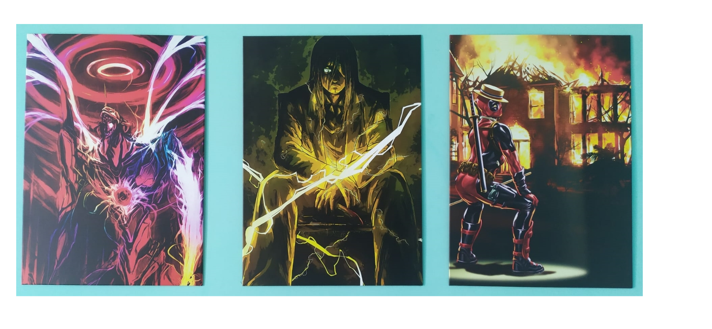
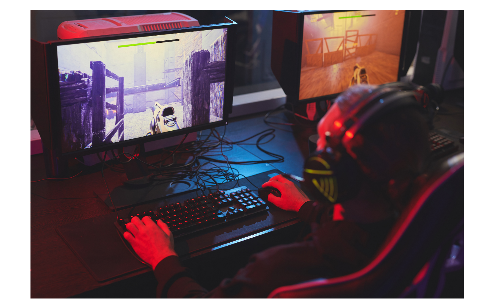

Da quando ho iniziato a giocare al PC, mi sono avvicinato a Twitch e facendp un pò di zapping tra i vari canali, ho scoperto Dario Moccia: streamer che parla principalmente di anime e manga.
Ad oggi, parte della mia stanza è così arredata: da sinistra abbiamo Eva 01, l'Eva protagonista dell'anime Evangelion, poi Eren Yeager, il protagonista di Attack on Titan e per ultimo Deadpool, personaggio Marvel al quale sono particolarmente affezionato per la sua ironia.
Opere non convenzionali che ho acquistato da Displate.com che incentiva l'acquisizione di tali opere con una finalità sociale quale la sostenibilità ambientale: infatti per ogni opera acquisita viene piantato un albero.
Mobilità sostenibile
Questo è un settore a me molto caro, sono in quella fase della vita in cui vorresti comprarti un'auto e stai valutando le varie opzioni. Dunque facendo il mio consueto giro su Autoscout24 ho visto una Tesla e da lì è stato amore a prima vista. Chiaramente le mie finanze non mi permettono l'acquisto di un modello così costoso per cui ho iniziato a cercare altri modelli, ad informarmi sulla vita con un'automobile elettrica: autonomia, costi, ricarica, e così via. Sono rimasto piacevolemnte colpito e sono quasi certo che la mia prima auto sarà elettrica (o al massimo ibrida) in quanto ne riconosco i vantaggi così come ho raccontato nel mio progetto di copywriting di Start2Impact.
Videogiochi

Sono un videogiocatore, mi piace giocare, mi diverte, condivido questa passione anche con amici lontani e così facendo ci teniamo in contatto. Dato l'elevato numero di variabili che un gioco contiene ritengo possa essere anche uno strumento educativo e che andrebbe trattato con la giusta attenzione.
Da piccolo giocavo a Yugioh e alla playstation, principalmente Pes, ora il mio passatempo è divenuto Lol (League of Legends), uno dei principali free to play al mondo, da PC: non ho capacità straordinarie ma mi diverte e ci passo diverso tempo.
Ultimamente ho anche scaricato Yugioh Master Duel, il primo free to play dedicato a Yugioh che mi piace seguire su Twitch e che un pò mi ha riportato all'infanzia di quando andavo a fare i tornei con i miei amici.
Cinema
Il cinema rappresenta uno dei principali passatempo in quanto ci vado almeno una volta alla settimana.
Non ho una vera e propria cultura cinematografica (i film più vecchi non li conosco proprio) ma mi piace esaminarne le storie, seguire le recensioni su YouTube, comprendere i punti critici di un film e una loro eventuale interprentazione: è un mondo che mi incuriosisce.
Indimenticabile fu l'esperienza della maratona di Avengers Endagame al cinema dove iniziammo a vedere Avengers Inifinity War a mezzanotte per poi iniziare all'inicirca alle 3 di notte Endagame: una sala piena, un popolo che ragionava e si emozionava allo stesso modo, ogni verso, ogni gesto sembrava parte di un copione, eravamo tutti sincronizzati e tutti facevamo le stesse cose mostrando il massimo rispetto per un opera che chiudeva un ciclo di 10 anni e che racchiudeva la nostra vita.